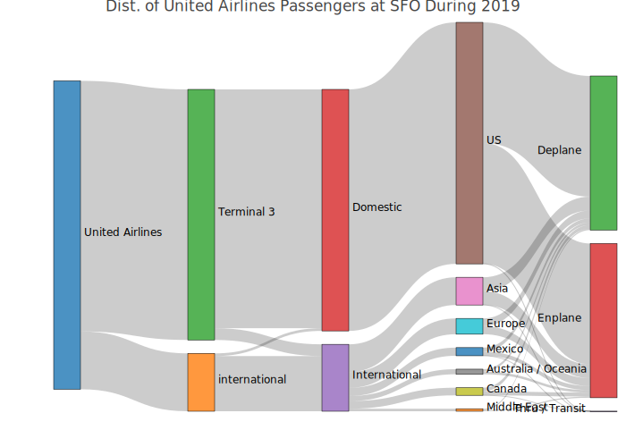
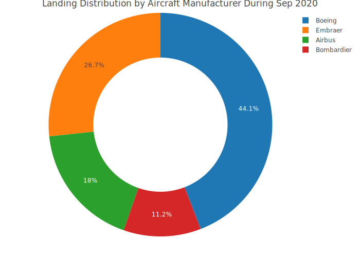
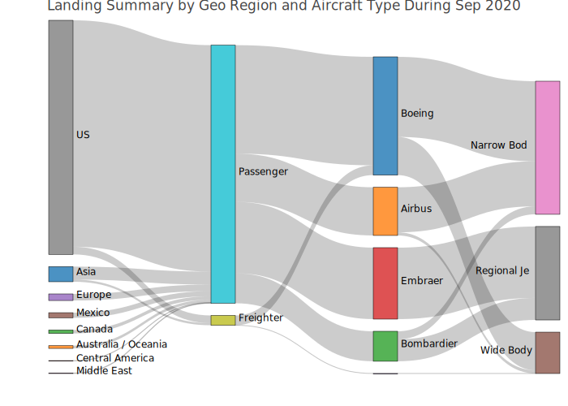

The sfo package summarizes the monthly air passengers and landings at San Francisco International Airport (SFO) between 2005 and 2022. Data source: San Francisco data portal - DataSF API

Installation
Install the stable version from CRAN:
install.packages("sfo")or install the development version from Github:
# install.packages("devtools")
devtools::install_github("RamiKrispin/sfo", ref = "main")Datasets
The sfo package provides the following two datasets:
-
sfo_passengers- air traffic passengers statistics -
sfo_stats- air traffic landings statistics
More information about the datasets is available in the following vignette.
Examples
The sfo_passengers dataset provides monthly summary of the number of passengers in SFO airport by different categories (such as terminal, geo, type, etc.):
library(sfo)
data("sfo_passengers")
head(sfo_passengers)
#> activity_period operating_airline operating_airline_iata_code
#> 1 202212 EVA Airways BR
#> 2 202212 EVA Airways BR
#> 3 202212 Emirates EK
#> 4 202212 Emirates EK
#> 5 202212 Flair Airlines, Ltd. F8
#> 6 202212 Flair Airlines, Ltd. F8
#> published_airline published_airline_iata_code geo_summary geo_region
#> 1 EVA Airways BR International Asia
#> 2 EVA Airways BR International Asia
#> 3 Emirates EK International Middle East
#> 4 Emirates EK International Middle East
#> 5 Flair Airlines, Ltd. F8 International Canada
#> 6 Flair Airlines, Ltd. F8 International Canada
#> activity_type_code price_category_code terminal boarding_area
#> 1 Deplaned Other International G
#> 2 Enplaned Other International G
#> 3 Deplaned Other International A
#> 4 Enplaned Other International A
#> 5 Deplaned Low Fare International A
#> 6 Enplaned Low Fare International A
#> passenger_count
#> 1 12405
#> 2 15151
#> 3 13131
#> 4 14985
#> 5 2543
#> 6 2883The sfo_stats dataset provides monthly statistics on the air traffic landing at SFO airport:
data("sfo_stats")
head(sfo_stats)
#> activity_period operating_airline operating_airline_iata_code
#> 1 202212 Air Canada AC
#> 2 202212 Delta Air Lines DL
#> 3 202212 Delta Air Lines DL
#> 4 202212 WestJet Airlines WS
#> 5 202212 WestJet Airlines WS
#> 6 202212 WestJet Airlines WS
#> published_airline published_airline_iata_code geo_summary geo_region
#> 1 Air Canada AC International Canada
#> 2 Delta Air Lines DL Domestic US
#> 3 Delta Air Lines DL Domestic US
#> 4 WestJet Airlines WS International Canada
#> 5 WestJet Airlines WS International Canada
#> 6 WestJet Airlines WS International Canada
#> landing_aircraft_type aircraft_body_type aircraft_manufacturer aircraft_model
#> 1 Passenger Wide Body Boeing B773
#> 2 Passenger Narrow Body Airbus A319
#> 3 Passenger Narrow Body Airbus A320
#> 4 Passenger Narrow Body Boeing B38M
#> 5 Passenger Narrow Body Boeing B737
#> 6 Passenger Narrow Body Boeing B738
#> aircraft_version landing_count total_landed_weight
#> 1 - 1 554000
#> 2 - 163 22459444
#> 3 - 43 6114514
#> 4 - 5 764000
#> 5 - 5 646000
#> 6 - 3 438900Total number of passngers
The total number of passengers in most recent month by activity_type_code and geo_region:
library(dplyr)
sfo_passengers %>%
filter(activity_period == max(activity_period)) %>%
group_by(activity_type_code, geo_region) %>%
summarise(total = sum(passenger_count), .groups = "drop")
#> # A tibble: 19 × 3
#> activity_type_code geo_region total
#> <chr> <chr> <int>
#> 1 Deplaned Asia 147461
#> 2 Deplaned Australia / Oceania 45950
#> 3 Deplaned Canada 53237
#> 4 Deplaned Central America 12749
#> 5 Deplaned Europe 124301
#> 6 Deplaned Mexico 64121
#> 7 Deplaned Middle East 28921
#> 8 Deplaned US 1353634
#> 9 Enplaned Asia 166684
#> 10 Enplaned Australia / Oceania 44286
#> 11 Enplaned Canada 57280
#> 12 Enplaned Central America 15475
#> 13 Enplaned Europe 135635
#> 14 Enplaned Mexico 73971
#> 15 Enplaned Middle East 31446
#> 16 Enplaned US 1382565
#> 17 Thru / Transit Australia / Oceania 2817
#> 18 Thru / Transit Europe 2496
#> 19 Thru / Transit US 3129The sankey_ly function enables us to plot the distribution of a numeric variable by multiple categorical variables. The following example shows the distribution of the total United Airlines passengers during 2019 by a terminal, travel type (domestic and international), geo, and travel direction (deplaned, enplaned, and transit):
sfo_passengers %>%
filter(operating_airline == "United Airlines",
activity_period >= 201901 & activity_period < 202001) %>%
mutate(terminal = ifelse(terminal == "International", "international", terminal)) %>%
group_by(operating_airline,activity_type_code, geo_summary, geo_region, terminal) %>%
summarise(total = sum(passenger_count), .groups = "drop") %>%
sankey_ly(cat_cols = c("operating_airline", "terminal","geo_summary", "geo_region", "activity_type_code"),
num_col = "total",
title = "Dist. of United Airlines Passengers at SFO During 2019")
Total number of landing
The total number of landings during the most recent month by activity_type_code and aircraft_manufacturer:
sfo_stats %>%
filter(activity_period == 202212,
aircraft_manufacturer != "") %>%
group_by(aircraft_manufacturer) %>%
summarise(total_landing = sum(landing_count),
`.groups` = "drop") %>%
arrange(-total_landing) %>%
plot_ly(labels = ~ aircraft_manufacturer,
values = ~ total_landing) %>%
add_pie(hole = 0.6) %>%
layout(title = "Landing Distribution by Aircraft Manufacturer during Dec 2022")
The following Sankey plot demonstrates the distribution of the number of landing in SFO by region and aircraft type, manufacturer, and body type during Dec 2022:
sfo_stats %>%
filter(activity_period == 202212) %>%
group_by(geo_summary, geo_region, landing_aircraft_type, aircraft_manufacturer, aircraft_body_type) %>%
summarise(total_landing = sum(landing_count),
groups = "drop") %>%
sankey_ly(cat_cols = c("geo_summary", "geo_region",
"landing_aircraft_type",
"aircraft_manufacturer",
"aircraft_body_type"),
num_col = "total_landing",
title = "Landing Summary by Geo Region and Aircraft Type During Dec 2022")